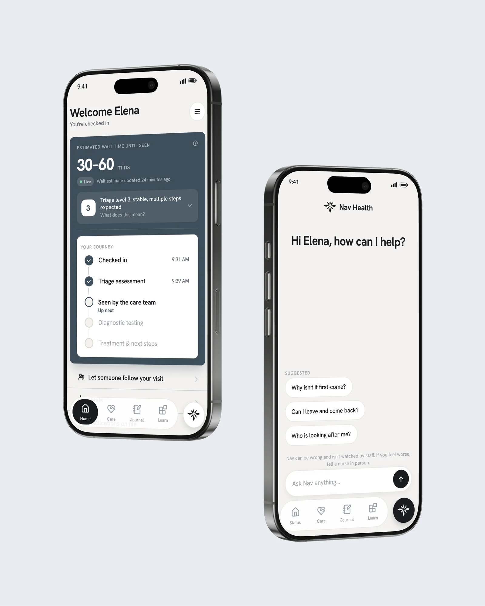

Overview
Nav Health is a digital nurse navigator for the emergency room. It tells a patient where she stands, what her triage level actually means, what happens next, and roughly when, in plain language.
This is my capstone and thesis, and it is still in the program with me. The full case study goes up once it is finished. Until then, here is what it is about.
The problem with the emergency room wait is not how long it is. It is that you cannot see it.
A department cannot promise a time, which is the reason most of them tell patients nothing at all. But she was never asking for a promise. She was asking for a position, and the department already knows where she stands. It just never says it out loud. Nav Health is built around one claim: an anticipatory system should leave someone feeling more in control, not less.

An honest range, a triage level that arrives already translated, and the visit laid out end to end
Say the wait honestly
A range that is timestamped and maintained, not a countdown. A countdown reads as a promise, and an emergency department reorders by acuity, not by arrival.
Translate the number
A triage level on its own is a ranking, which is the last thing anyone wants handed to them in a waiting room. The card carries what it means, what it does not mean, and that it gets looked at again.
Calm by default, alarm reserved
One quiet surface, and colour spent in exactly one place. If everything can shout, nothing can.
The full study lands when the work does
Still ahead: the service blueprint, the direction I cut, the four decisions the final screens rest on, what I chose not to build, and what sixteen test sessions settled. It goes up here as soon as the program is behind me.